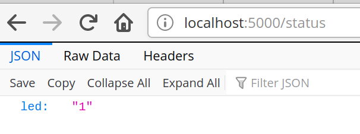
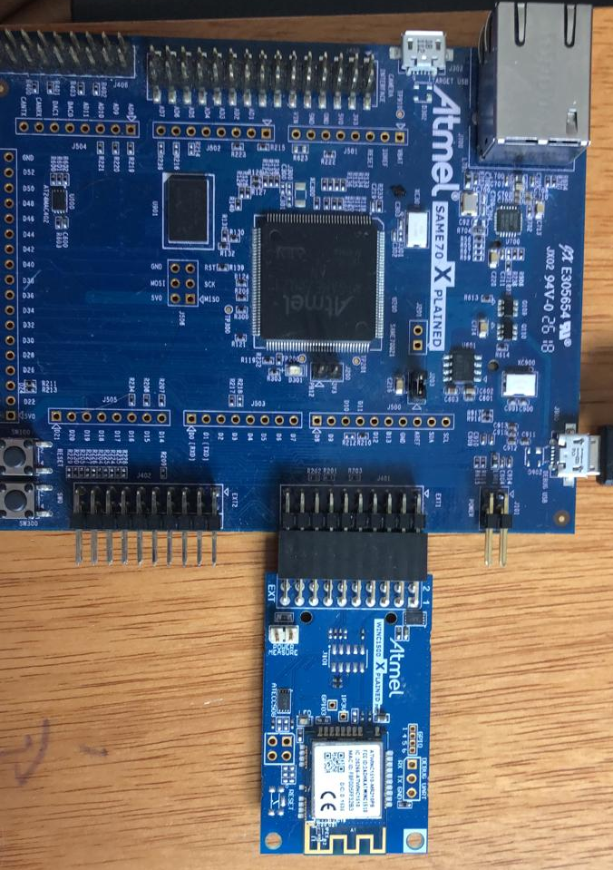

LAB - RTOS - WIFI

Neste laboratório iremos modificar o exemplo RTOS-WIFI, que realiza uma requisição GET em um webserver (Flask) rodando em seu computador, onde o mesmo após receber essa requisição retorna um dado JSON.
Lab
| Exemplo base | LAB |
|---|---|
SAME70-examples/Comunicacao/RTOS-WIFI-WINC1500-get-EXT1  |
Lab-10-RTOS-WIFI |
Código exemplo
- Atualizar o repositório do SAME70-Examples
- Vamos modificar o código exemplo
Comunicacao/RTOS-WIFI-WINC1500-get-RTOS-EXT1, faça uma cópia do seu lab para a nova pasta no seu repositórioLab-9-RTOS-WIFI
IoT
IoT (Internet of Things) é um conceito que tem como objetivo a conexão entre objetos e a internet, ela faz parte da revolução da Industria 4.0 e está cada vez mais presentes em nossas vidas. Desenvolver sistemas embarcados muitas vezes envolvem conectar esses sistemas na internet, e isso pode se dar atráves de diversos meios:
- Cabo de rede (Ethernet)
- Conexão WIFI
- 3G/4G/GSM
- Sistemas de comunicação de baixa energia:
- LoRa/ ...
- Sistema de comunicação proprietário
- AM/FM/...
Para cada aplicação existe uma forma de comunicação ideal, e vocês como engenheiros de computação devem estar cientes dessas formas e saber interagir com elas.
Nesse laboratório iremos explorar um pouco a comunicação WIFI em sistemas embarcados, para isso iremos conectar um módulo externo a nossa placa que servirá como 'placa de rede' do nosso microcontrolador, esse módulo é o WINC 1500.
Warning
Ao desenvolver sistemas IoT você é responsável pela segurança dos dados que estão sendo enviados/recebidos. E não só na ponta do embarcado, como também no armazenamento de dados no servidor.
- https://www.iotforall.com/5-worst-iot-hacking-vulnerabilities/
- https://observer.com/2015/07/eight-internet-of-things-security-fails/
- https://medium.com/iot-security-review/5-internet-of-things-security-fails-fae2fb2bb871
- https://securityintelligence.com/organizations-continue-to-fail-at-iot-security-and-the-consequences-are-growing/
WINC1500
Existem inúmeros módulos WIFI para serem utilizados em sistemas embarcados, você pode comprar microcontroladores que possuem toda a parte WIFI integrada no chip (exemplo: STM32), nesses casos não é necessário conectar um módulo externo, tudo está integrado no chip (tirando a antena)!
O módulo que iremos utilizar é desenvolvido pela Microchip e chama Winc1500
Esse módulo possui comunicação SPI (similar a UART, porém desenvolvida para comunicação entre chips) que será usada como interface de controle do uC para enviar/ receber um dado wifi, temos que nos comunicar com esse módulo. Essa parte está feita nos exemplos fornecidos, e é chamada de comunicação M2M: Machine-to-Machine.
Exemplo
Esse laboratório faz uso do exemplo disponível no repositório SAME70-Examples/RTOS/WIFI-WINC1500-get-RTOS-EXT1 que possui duas partes:
python-server: servidor em flask que possui um forms e uma página de status que retorna um valor em jsonWIFI-RTOS-get: firmware a ser executado na nossa placa.
python-server
Acesse a pasta python-server que contém o script server.py, instale o flask via pip e execute o programa:
pip install -r requirements.txt --user
python server.py --host=0.0.0.0
O resultado esperado deve ser o seguinte:
➜ python-server git:(master) ✗ python server.py
* Serving Flask app "server" (lazy loading)
* Environment: production
WARNING: This is a development server. Do not use it in a production deployment.
Use a production WSGI server instead.
* Debug mode: on
* Running on http://0.0.0.0:5000/ (Press CTRL+C to quit)
* Restarting with stat
* Debugger is active!
* Debugger PIN: 278-674-158
O servidor em Flask é simples e permite que alteremos uma variável led via um form e lermos o status via um get:
| http://localhost:5000 | http://localhost:5000/status |
 |
 |
Preparando o WebServer
Para validar, conecte seu celular na mesma rede WIFi e acesse o ip da sua máquina na porta 5000 e valide se o webserver está funcionando.
Info
Deixe o servidor rodando, vamos fazer o embarcado se conectar nele.
Tip
Para descobrir seu IP abra outro terminal e execute o comando ipconfig, nos exemplos iremos usar: http://192.168.0.138:5000, mas você deve adequar o IP ao seu.
Anote o seu IP, iremos usar mais para frente
Se não funcionar, talvez seja necessário desativar o firewall do windows:
Lembre de ativar novamente após a atividade.
WIFI-RTOS-get
Vamos agora explorar e executar o nosso firmware.
Conectando o hardware
Conecte o módulo WINC1500 no EXT-1 do kit de desenvolvimento.
| Diagrama | Conexão |
|---|---|
 |
 |
Entendendo o firmware
Vamos relembrar um pouco de camada física e Tecweb agora, toda vez que você acessa uma página da internet um socket é criado, este socket é um canal de comunicação TCP/UDP entre dois pontos via comunicação internet. Uma vez estabelecido o socket o client (no nosso caso o embarcado) pode fazer uma requisição (get) ou um envio de informação (post). Nesse exemplo iremos fazer um get no servidor que está rodando no seu computador.

Nosso firmware irá seguindo os seguintes passos a seguir:
-
WIFI (camadas:
network accesseinternet)- Conecta no roteador
- Busca IP no DCHP
-
Socket (camadas:
applicationetransport)- Cria novo socket
- Realiza get
- Lê ack
- Lê mensagem
tasks
O firmware exemplo possui duas tarefas: task_wifi e task_process, a primeira é responsável por realizar toda a comunicação com o módulo WINC1500 e fazer a inicialização da comunicação socket com o webserver em Python, a segunda é responsável por gerenciar as mensagens que serão enviadas para o servidor.

A task_wifi gerencia alguns callbacks de software, que são eventos gerados do módulo WIFI, existem vários callbacks que podem ser utilizados, nesse exemplo usamos:
wifi_cb: callback de eventos relacionado a camada física do WIFI ( conexão, ssid list, ...)resolve_cb: callback relacionado a resolução de nome no DNS, se quisermos acessar um HOST_NAME e não um ip (google.com -> 10.21.3.12).socket_cb: eventos de socket (conexão/ nova mensagem/ erro/ ...)
A task_process aguarda um socket ter sido criado na task_wifi e quando isso for verdadeiro faz um envio de um comando do tipo get e aguarda por dois pacotes de retorno, o ack e a msg, que contém o payload requisitado (no nosso caso um json).
Essa tarefa foi implementada com a máquina de estados a seguir em mente, usando o operador switch case
enum states {
WAIT = 0,
GET,
ACK,
MSG,
TIMEOUT,
DONE,
};

Lab
Info
Abra o projeto no Atmel Studio
Vamos agora começar o lab para valer, primeiro vamos executar o exemplo. Mas para isso é necessários configurarmos o módulo WIFI para acessar a rede que está disponível da sua casa.
Preparando o firmware
Devemos configurar o main.h do exemplo adicionando as informações do roteador na qual ele deve se conectar, edite o arquivo com as configurações da sua rede:
A configuração da rede:
/** Wi-Fi Settings */
#define MAIN_WLAN_SSID "LabArqComp" /**< Destination SSID */
#define MAIN_WLAN_PSK "s4m370xpld" /**< Password for Destination SSID */
IP e porta do servidor (seu computador):
#define MAIN_SERVER_PORT 5000
#define MAIN_SERVER_NAME "192.168.42.42"
Warning
- O sistema embarcado e o webserver devem estar na mesma rede!
- O modulo winc1500 só se conecta em rede de 2.4Ghz
- Sugestão: faça seu celular virar um acesspoint, conecte o embarcado e o computador nele!
Tarefa
- Conecte o WINC1500 no EXT1
- Adicione informações do SSID da sua rede
- Modifique o IP do servidor com o IP da sua máquina
- Programe o uC
Resultados esperados
Terminal Window (Atmel Studio):

Terminal do flask:
192.168.0.107 - - [26/May/2020 16:51:07] "GET /status HTTP/1.1" 200 -
192.168.0.107 - - [26/May/2020 16:51:17] "GET /status HTTP/1.1" 200 -
Breve descrição do funcionamento
Nosso embarcado envia uma requisição GET através do MAIN_PREFIX_BUFFER definido dentro do main.h:
/** Send buffer of TCP socket. */
#define MAIN_PREFIX_BUFFER "GET /status HTTP/1.1\r\n Accept: */*\r\n\r\n"
Nosso webserver (Flask) recebe essa requisição e verifica o que foi recebido, nesse caso ele recebe o "/status" após o GET e responde com o seguinte JSON {led' : '1'}:
@app.route('/status', methods = ['POST', 'GET'])
def status():
global led
if request.method == 'POST':
status = request.form
led = status['LED']
return render_template("status.html", status = status)
else:
return jsonify({'led' : led}), 200
Acionando LED conforme led:status
Vamos agora acionar o LED da placa conforme o status recebido no comando get, se valor igual a 0 apagamos o LED da placa e se valor igual a 1 acendemos o LED da placa.
Warning
Você deve inicializar o pino do LED da placa como saída! Isso não está feito.
Para isso, será necessário realizar o parse da mensagem HTML que é enviada pelo servidor, isso deve ser feito dentro da task_process. Lembre que nessa tarefa implementamos uma máquina de estados, e é no estado msg que possuímos a mensagem com o status do nosso LED.
case msg
case MSG:
printf("STATE: MSG \n");
memset(g_receivedBuffer, 0, MAIN_WIFI_M2M_BUFFER_SIZE);
recv(tcp_client_socket, &g_receivedBuffer[0], MAIN_WIFI_M2M_BUFFER_SIZE, 0);
if(xQueueReceive(xQueueMsg, &p_recvMsg, 5000) == pdTRUE){
printf(STRING_LINE);
printf(p_recvMsg->pu8Buffer);
printf(STRING_EOL); printf(STRING_LINE);
state = DONE;
}
else {
state = TIMEOUT;
};
break;
A mensagem com o conteúdo (head + json) é salva no buffer p_recvMsg->pu8Buffer).
Exemplo do conteúdo do buffer
Content-Type: application/json
Content-Length: 15
Server: Werkzeug/1.0.1 Python/3.6.9
Date: Tue, 26 May 2020 20:23:04 GMT
{
"led": 0
}
É necessário processar esse buffer e encontrar o valor que está associado ao led. A forma mais 'fácil' de se fazer isso com C é utilizando a função strstr, que retorna um ponteiro para o local de onde foi encontrado a substring.
The C library function char *strstr(const char *haystack, const char *needle) function finds the first occurrence of the substring needle in the string haystack. The terminating '\0' characters are not compared.
Fonte: https://www.tutorialspoint.com/c_standard_library/c_function_strstr.htm
Tip
Busque no buffer a substring "led":.
B - melhorando o firmware
Vamos alterar como o get é realizado, da forma atual temos um chamado de #define MAIN_PREFIX_BUFFER que define a string da mensagem que será enviada no get, que é copiada para o buffer global g_sendBuffer:
case GET:
printf("STATE: GET \n");
sprintf((char *)g_sendBuffer, MAIN_PREFIX_BUFFER);
send(tcp_client_socket, g_sendBuffer, strlen((char *)g_sendBuffer), 0);
state = ACK;
break;
Muito melhor seria termos uma função que recebe como parâmetro o g_sendBuffer e o path do commando get (/status).
Tarefa
- Crie uma função que formate o comando get
- Use a função no estado GET
- Teste!
Tip
- Mude o valor no servidor flask e veja o led mudando o status
- http://localhost:5000
- Tem muito atraso? Quanto tempo leva essa atualização? pq?
A
Podemos melhorar várias coisas nesse projeto, mas vamos por partes. A primeira coisa que podemos fazer é adicionar o botão da placa e fazer ele também controlar o LED.
Tarefa
- Adicione o botão da placa -> callback -> semáforo
- O LED é controlado ou pelo botão da placa ou pelo servidor flask
Preencher ao finalizar o lab